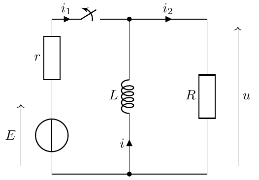
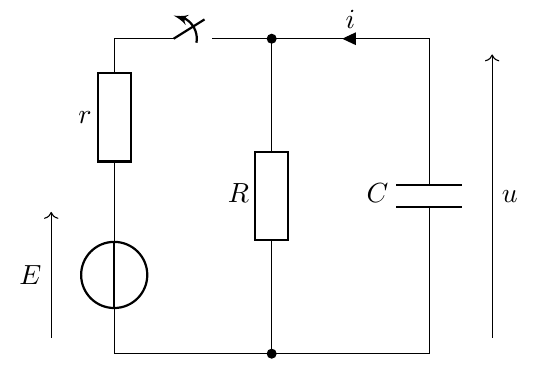
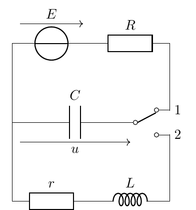
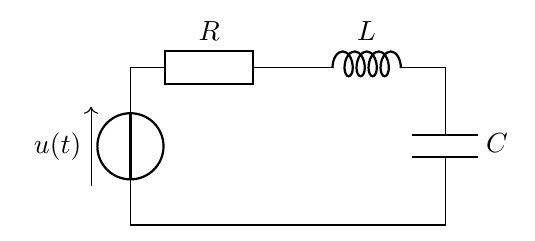
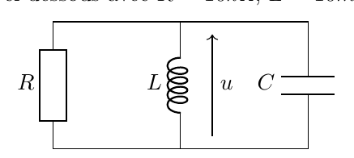
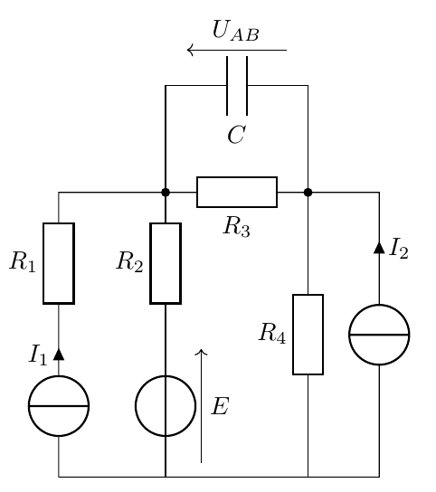

TD 2 — Régime transitoire
RC, RL, ouverture d'un interrupteur « fermé depuis très longtemps », RLC série et parallèle, Thévenin vu par un condensateur. Le fil conducteur : conditions initiales par continuité + EDO + τ.
Pas de corrigé officiel fourni : correction rédigée à partir du cours. Les signes dépendent des orientations du schéma : elles sont précisées à chaque fois.
Exercice 1 — Charge d'un condensateur
15 min1. Équation
$E=Ri+u_C$ et $i=C\frac{\mathrm du_C}{\mathrm dt}$ ⇒ $RC\frac{\mathrm du_C}{\mathrm dt}+u_C=E$, $\tau=RC=100\times100\cdot10^{-6}=\boxed{10\ \mathrm{ms}}$.
2. Solution
$u_C=Ae^{-t/\tau}+E$, $u_C(0^+)=u_C(0^-)=0$ ⇒ $A=-E$ : $\boxed{u_C(t)=6\left(1-e^{-t/10\,\mathrm{ms}}\right)\ \mathrm V}$.
3. Courbes
E(t) : échelon 0 → 6 V à t = 0. $u_C$ : monte de 0 à 6 V (63 % à 10 ms, ≈ 6 V à 50 ms), tangente à l'origine qui atteint 6 V en τ. $i=\frac ERe^{-t/\tau}=60e^{-t/\tau}$ mA : saute à 60 mA puis décroît vers 0.
4. Courant max
$i_{max}=i(0^+)=E/R=\boxed{60\ \mathrm{mA}}$.
Exercice 2 — Établissement du courant dans une bobine
15 min1. Équation
$E=Ri+L\frac{\mathrm di}{\mathrm dt}$ ⇒ $\frac LR\frac{\mathrm di}{\mathrm dt}+i=\frac ER$ ; $\tau=\frac LR=\frac{0{,}1}{100}=\boxed{1\ \mathrm{ms}}$.
2. Solution
$i(0^+)=i(0^-)=0$ (continuité du courant) ⇒ $\boxed{i(t)=\frac ER\left(1-e^{-t/\tau}\right)=60\left(1-e^{-t/1\,\mathrm{ms}}\right)\ \mathrm{mA}}$.
3. Courbes
$u_L=L\frac{\mathrm di}{\mathrm dt}=Ee^{-t/\tau}$ : saute à 6 V puis décroît. i : monte de 0 à 60 mA. $u_R=Ri=E(1-e^{-t/\tau})$.
4. Tension max
$u_{L,max}=u_L(0^+)=E=\boxed{6\ \mathrm V}$ : à l'instant initial, la bobine « bloque » le courant et prend toute la tension.
Exercice 3 — Ouverture d'un circuit inductif
25 min
1. Avant l'ouverture (t = 0⁻)
L = fil ⇒ R est court-circuitée : $\boxed{u(0^-)=0}$. Tout le courant $E/r=1$ A passe dans L, de haut en bas. Avec l'orientation de la figure ($i$ vers le haut dans L) : $\boxed{i(0^-)=-1\ \mathrm A}$ (|i| = 1 A).
2. Équation pour t > 0
Seule reste la maille L–R. Le courant $i$ monte dans L puis descend dans R : $u=Ri$. Aux bornes de L (même tension u, orientation telle que $u=-L\frac{\mathrm di}{\mathrm dt}$) : $Ri=-L\frac{\mathrm di}{\mathrm dt}$ ⇒ $\frac LR\frac{\mathrm di}{\mathrm dt}+i=0$, $\tau=\frac LR=\boxed{5\ \mathrm{ms}}$.
Solution
Continuité : $i(0^+)=-1$ A ⇒ $\boxed{i(t)=-\frac Er e^{-t/\tau}=-e^{-t/5\,\mathrm{ms}}\ \mathrm A}$ et $\boxed{u(t)=Ri=-5e^{-t/5\,\mathrm{ms}}\ \mathrm V}$.
u saute de 0 à −5 V à l'ouverture (c'est permis), le courant non.
3. Énergie perdue par la bobine
Elle passe de $\frac12Li(0)^2$ à 0 : $W_L=\frac12\times0{,}025\times1^2=\boxed{12{,}5\ \mathrm{mJ}}$.
4. Puissance et énergie dans R
$P(t)=Ri^2=R\left(\frac Er\right)^2e^{-2t/\tau}=5e^{-2t/\tau}$ W. $W_R=\int_0^\infty P\,\mathrm dt=R\frac{E^2}{r^2}\cdot\frac\tau2=5\times1\times0{,}0025=\boxed{12{,}5\ \mathrm{mJ}}$.
5. Comparaison
$W_R=W_L$ : toute l'énergie magnétique stockée dans la bobine est dissipée par effet Joule dans R. (Sans R, l'ouverture provoquerait une surtension énorme : l'étincelle aux bornes d'un interrupteur.)
Exercice 4 — Ouverture d'un circuit capacitif
20 min
1. t = 0⁻ : condensateur = circuit ouvert
$\boxed{i(0^-)=0}$. Le courant de la source passe par r puis R : diviseur ⇒ $\boxed{u(0^-)=E\frac{R}{R+r}=10\times\frac{1000}{1010}\approx9{,}90\ \mathrm V}$.
2. Équation pour t > 0
Il reste la maille C–R : C se décharge dans R. Avec i orienté de C vers le nœud (figure) : $i=-C\frac{\mathrm du}{\mathrm dt}$ et $u=Ri$ ⇒ $RC\frac{\mathrm du}{\mathrm dt}+u=0$, $\tau=RC=\boxed{2\ \mathrm{ms}}$.
Solution
Continuité de u : $\boxed{u(t)=9{,}90\,e^{-t/2\,\mathrm{ms}}\ \mathrm V}$ ; $\boxed{i(t)=\frac uR=9{,}90\,e^{-t/2\,\mathrm{ms}}\ \mathrm{mA}}$. i saute de 0 à 9,9 mA à l'ouverture.
Exercice 5 — Charge RC puis oscillations RLC
40 min1. Position 1 : (a) u(t) et τ ; (b) allure ; (c) durée pour que la charge diffère de 0,01 % de sa limite.
2. Position 2, C totalement chargé : (a) EDO de u ; (b) f₀ et durée de relaxation en énergie τₑ ; (c) u(t) avec u(0) = U₀ ; (d) pseudo-fréquence fₐ ; (e) durée pour diviser l'amplitude par 10 ; (f) comparer à Tₐ.

1(a) Charge
$E=Ri+u$, $i=C\frac{\mathrm du}{\mathrm dt}$ ⇒ $\boxed{u(t)=E\left(1-e^{-t/\tau}\right)}$, $\tau=RC=8\times0{,}3\cdot10^{-6}=\boxed{2{,}4\ \mu\mathrm s}$.
1(b) Allure
Exponentielle croissante de 0 vers 10 V, 63 % à 2,4 µs, tangente à l'origine atteignant 10 V en τ.
1(c) Écart de 0,01 %
$\frac{q_\infty-q}{q_\infty}=e^{-t/\tau}=10^{-4}$ ⇒ $t=\tau\ln10^4\approx9{,}2\,\tau\approx\boxed{22\ \mu\mathrm s}$.
2(a) Équation (C se décharge dans r + L)
Mailles $u=ri+L\frac{\mathrm di}{\mathrm dt}$ avec $i=-C\frac{\mathrm du}{\mathrm dt}$ (C se vide) : $$LC\frac{\mathrm d^2u}{\mathrm dt^2}+rC\frac{\mathrm du}{\mathrm dt}+u=0\iff\ddot u+2\lambda\dot u+\omega_0^2u=0,\ \lambda=\frac r{2L},\ \omega_0=\frac1{\sqrt{LC}}$$
2(b) f₀ et τₑ
$\omega_0=\frac1{\sqrt{0{,}05\times0{,}3\cdot10^{-6}}}\approx8165$ rad/s ⇒ $\boxed{f_0\approx1{,}30\ \mathrm{kHz}}$. $\lambda=\frac5{0{,}1}=50$ s⁻¹. L'amplitude décroît en $e^{-\lambda t}$, l'énergie (∝ u²) en $e^{-2\lambda t}$ ⇒ $\boxed{\tau_e=\frac1{2\lambda}=\frac Lr=10\ \mathrm{ms}}$. $Q=\frac1r\sqrt{\frac LC}\approx82\gg\frac12$ : pseudo-périodique.
2(c) u(t)
$u=e^{-\lambda t}(A\cos\omega t+B\sin\omega t)$, $\omega=\sqrt{\omega_0^2-\lambda^2}$. $u(0)=U_0$ ⇒ $A=U_0$ ; $i(0)=0$ ⇒ $\dot u(0)=0$ ⇒ $-\lambda A+\omega B=0$ ⇒ $B=\frac\lambda\omega U_0$ : $$\boxed{u(t)=U_0\,e^{-t/(2\tau_e)}\left(\cos\omega t+\frac\lambda\omega\sin\omega t\right)}\quad(U_0=E=10\ \mathrm V)$$
2(d) Pseudo-fréquence
$\omega=\omega_0\sqrt{1-\frac{\lambda^2}{\omega_0^2}}$ avec $\frac{\lambda^2}{\omega_0^2}\approx3{,}8\cdot10^{-5}$ ⇒ $f_a\approx f_0\approx\boxed{1{,}30\ \mathrm{kHz}}$ (écart relatif 2·10⁻⁵, indiscernable).
2(e) Amplitude divisée par 10
$e^{-\lambda t}=\frac1{10}$ ⇒ $t=\frac{\ln10}{\lambda}=\frac{2{,}30}{50}\approx\boxed{46\ \mathrm{ms}}$.
2(f) Comparaison
$T_a=1/f_a\approx0{,}77$ ms ⇒ $t\approx60\,T_a$ : il faut une soixantaine d'oscillations pour perdre un facteur 10. Cohérent avec $Q\approx82$ (un grand Q = beaucoup d'oscillations).
Exercice 6 (bonus) — RLC série forcé
10 min
1. Équation
$u(t)=Ri+L\frac{\mathrm di}{\mathrm dt}+u_C$, $i=C\frac{\mathrm du_C}{\mathrm dt}$ ⇒ $\boxed{LC\frac{\mathrm d^2u_C}{\mathrm dt^2}+RC\frac{\mathrm du_C}{\mathrm dt}+u_C=u(t)}$.
2. Les trois régimes
Selon le discriminant de $LCr^2+RCr+1=0$, soit $Q=\frac1R\sqrt{\frac LC}$ : apériodique ($Q\lt\frac12$), critique ($Q=\frac12$), pseudo-périodique ($Q>\frac12$).
Exercice 7 (bonus) — RLC parallèle
25 min
1. Équation
Courants descendant dans chaque branche (convention récepteur) : $\frac uR+C\frac{\mathrm du}{\mathrm dt}+i_L=0$ avec $L\frac{\mathrm di_L}{\mathrm dt}=u$. On dérive : $$\boxed{\frac{\mathrm d^2u}{\mathrm dt^2}+\frac1{RC}\frac{\mathrm du}{\mathrm dt}+\frac1{LC}u=0}$$
2. Facteur de qualité
Par identification avec $\ddot u+\frac{\omega_0}Q\dot u+\omega_0^2u=0$ : $\omega_0=\frac1{\sqrt{LC}}=10^4$ rad/s et $\boxed{Q=RC\omega_0=R\sqrt{\frac CL}}=10^4\sqrt{\frac{10^{-6}}{10^{-2}}}=100$. ⚠ C'est l'inverse du cas série : ici une grande R amortit peu (elle dérive peu de courant).
3. Conditions initiales
$u(0)=\frac qC=1$ V. $\dot u(0)=-\frac1C\left(\frac{u(0)}R+i_L(0)\right)=-\frac{10^{-4}+10^{-4}}{10^{-6}}=-200$ V/s (avec $i_L$ orienté vers le bas dans la bobine).
Solution (Q = 100 : pseudo-périodique)
$\lambda=\frac1{2RC}=50$ s⁻¹, $\omega=\sqrt{\omega_0^2-\lambda^2}\approx10^4$ rad/s. $u=e^{-\lambda t}(A\cos\omega t+B\sin\omega t)$ ; $A=1$ ; $B=\frac{\dot u(0)+\lambda A}{\omega}=\frac{-200+50}{10^4}=-0{,}015$. $$\boxed{u(t)=e^{-50t}\big(\cos(10^4t)-0{,}015\sin(10^4t)\big)\approx e^{-50t}\cos(10^4t)\ \mathrm V}$$
Exercice 8 (bonus) — Cellule RC complexe
30 min
Indice : lecture du schéma
Nœud X (gauche de C) : branches (R₁ + I₁), (R₂ + E), R₃. Nœud Y (droite) : R₃, R₄, I₂. $U_{AB}=V_X-V_Y$ (flèche ← : pointe à gauche). La résistance R₁ en série avec la source de courant I₁ ne joue aucun rôle.
E_th : nœuds X et Y (C retiré), unités kΩ, mA, V
X : $I_1+\frac{E-V_X}{R_2}-\frac{V_X-V_Y}{R_3}=0$ ⇒ $2+\frac{10-V_X}{10}-\frac{V_X-V_Y}{10}=0$ ⇒ $2V_X-V_Y=30$.
Y : $I_2+\frac{V_X-V_Y}{R_3}-\frac{V_Y}{R_4}=0$ ⇒ $6V_X-11V_Y=-300$.
⇒ $V_X=39{,}4$ V, $V_Y=48{,}75$ V ⇒ $\boxed{E_{th}=V_X-V_Y=-9{,}375\ \mathrm V}$.
R_th : sources éteintes
I₁, I₂ → ouverts (la branche R₁ disparaît), E → fil (R₂ relie X à la masse). Entre X et Y : R₃ en parallèle avec (R₂ + R₄) : $\boxed{R_{th}=10\parallel22=6{,}875\ \mathrm{k\Omega}}$.
2. U_AB(t)
Circuit équivalent : $E_{th}$, $R_{th}$, C ⇒ $\tau=R_{th}C=6{,}875$ ms, $U_{AB}(0)=0$ : $$\boxed{U_{AB}(t)=E_{th}\left(1-e^{-t/\tau}\right)=-9{,}375\left(1-e^{-t/6{,}875\,\mathrm{ms}}\right)\ \mathrm V}$$